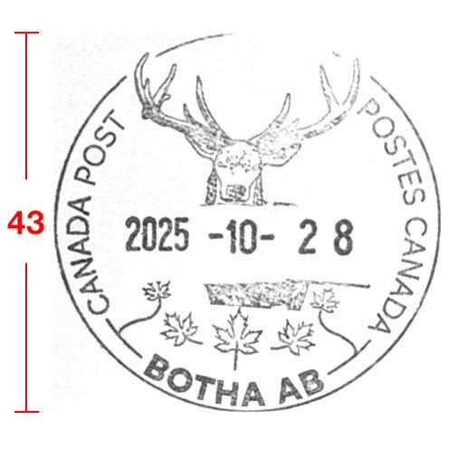

Botha PO pictorial cancel
Deer, maple leaves
- Status
- Active
- Run dates
- 2025-01-01 to present
- Design
- deer, maple leaves
- Ink colour
- Black
- Designer
- Unknown
- Post office
- Botha PO
5009 50 Ave
Botha, AB
T0C 0N0 - Subjects
- animal, deer, leaf, mamal, maple, plant, wildlife
Collect it by mail. Send your stamped covers, with a stamped return envelope, to the post office address above. How to collect pictorial cancels by mail · en français
 Castor POThe Key to Success / La clé du succès
Castor POThe Key to Success / La clé du succès Coronation PO2nd version
Coronation PO2nd version Coronation PO1st version
Coronation PO1st version Hanna PO1st version
Hanna PO1st version